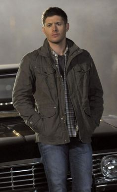

Main Characters
Dean Winchester
Dean Winchester is one of the main characters of Supernatural. He's appeared from season 1 - 15.
Dean Winchester (January 24 1979 - 2020) was a human and a hunter. He and his brother Sam
were raised in the hunting life by their father after Azazel killed their mother. He saved the world several times,
for example when he stopped the leviathan, or when he killed God, who was hell bent on destroying the world.
After defeating God, he died on a vampire hunt.